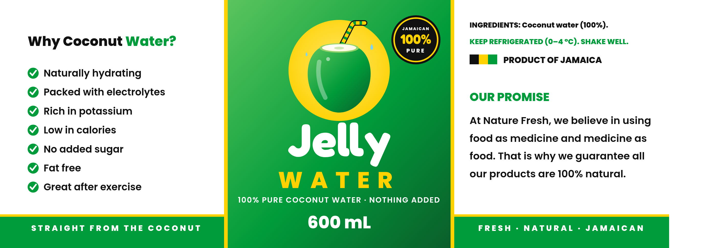
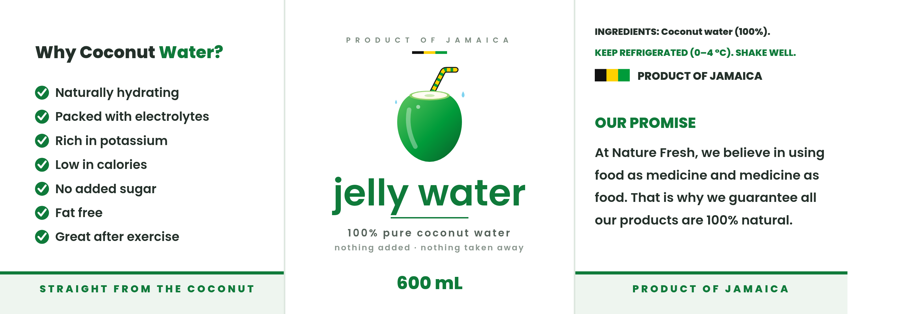
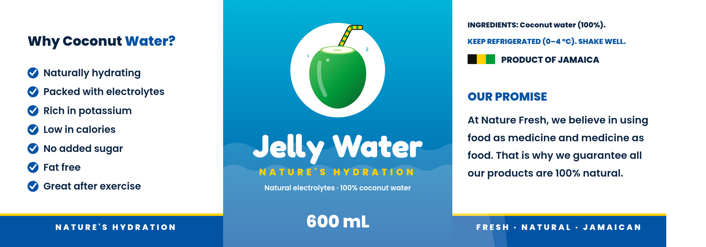
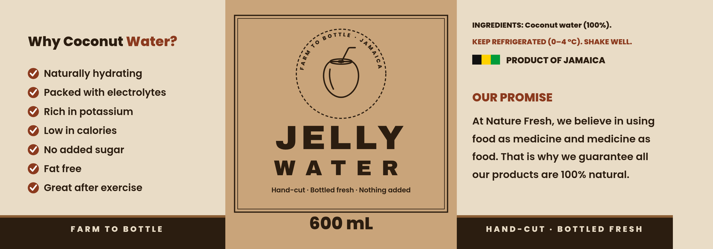
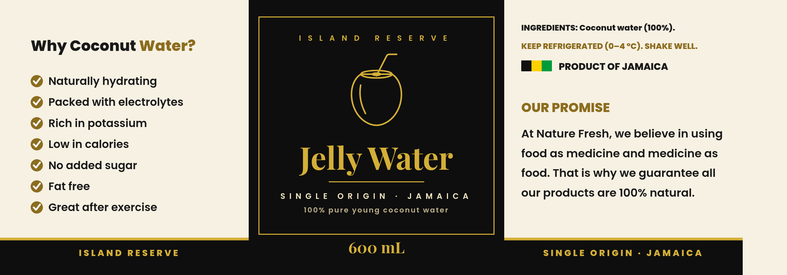
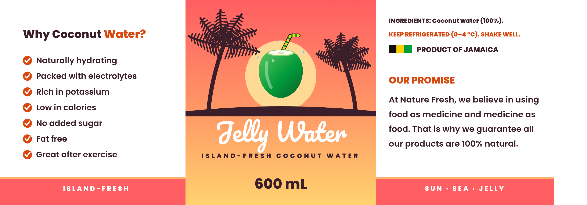
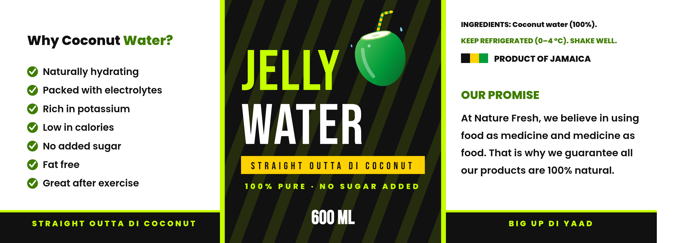
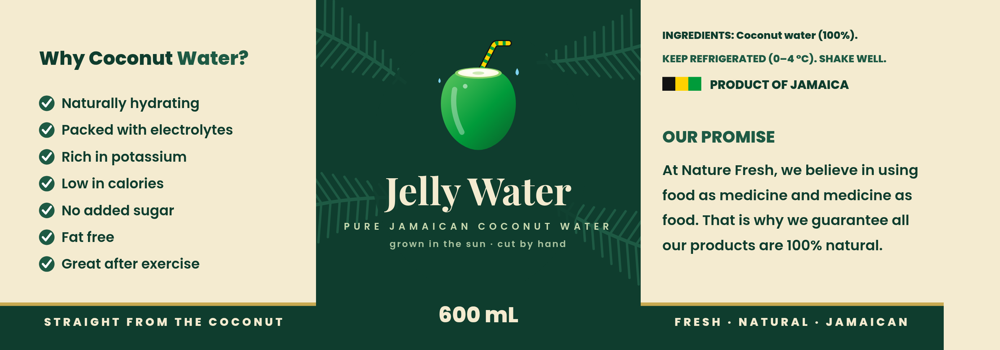
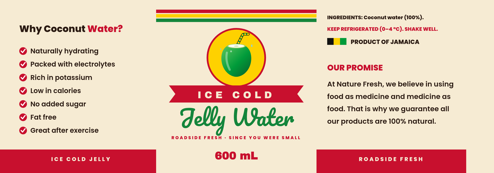
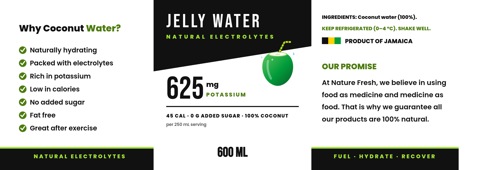

Back panel · Front panel · Side panel, flat as printed. Pick a number.

01 · Yaad ClassicFlag colours (black, green, gold). Says 'Jamaican' from across the shop. Safe, proud, but green is what every coconut brand uses.

02 · Pure & SimpleMostly white, small type. Signals 'nothing added' and stands out on a shelf full of green. Supermarkets, health shoppers.

03 · Ocean HydrationBlue = water, cool, refreshing. Sells hydration and electrolytes. Gyms, schools, hot-day buyers. Blue is rare in coconut water.

04 · Kraft FarmBrown paper and black stamp ink. Looks hand-made and local, like it came off the farm today. Markets, farm shops, artisan price.

05 · Island ReserveBlack and gold, serif type. Premium price for hotels, resorts, duty-free and gifts. One study found black can lower liking, so test it first.

06 · Sunset TropicalSunset colours and palm trees. Holiday feeling for tourists, beach bars and Instagram photos.

07 · Dancehall BoldBlack with neon lime, huge stacked letters. Loud and young. Gas stations, corner shops, events, street vendors.

08 · BotanicalDeep forest green with palm leaves, cream type. Natural and calm, a step above the bright greens. Health stores, cafés.

09 · Retro VendorRed, gold and green stripes and an 'ICE COLD' banner, like the roadside jelly cart. Nostalgia for Jamaicans at home and abroad.

10 · Gym FuelWhite, black and lime with the potassium number as the hero. Sells coconut water as a natural sports drink. Gyms, runners, athletes.